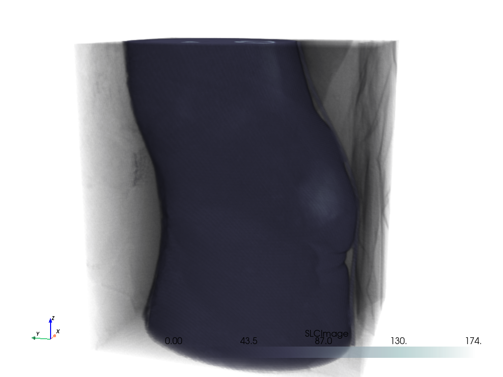

Note
Click here to download the full example code
Volume Rendering#
Volume render uniform mesh types like pyvista.UniformGrid or 3D
NumPy arrays.
This also explores how to extract a volume of interest (VOI) from a
pyvista.UniformGrid using the
pyvista.UniformGridFilters.extract_subset() filter.
import pyvista as pv
from pyvista import examples
# Download a volumetric dataset
vol = examples.download_knee_full()
vol
Simple Volume Render#
Opacity Mappings#
Or use the pyvista.BasePlotter.add_volume() method like below.
Note that here we use a non-default opacity mapping to a sigmoid:
You can also use a custom opacity mapping
We can also use a shading technique when volume rendering with the shade
option
Cool Volume Examples#
Here are a few more cool volume rendering examples
head = examples.download_head()
p = pv.Plotter()
p.add_volume(head, cmap="cool", opacity="sigmoid_6")
p.camera_position = [(-228.0, -418.0, -158.0), (94.0, 122.0, 82.0), (-0.2, -0.3, 0.9)]
p.show()

bolt_nut = examples.download_bolt_nut()
p = pv.Plotter()
p.add_volume(bolt_nut, cmap="coolwarm", opacity="sigmoid_5")
p.show()
frog = examples.download_frog()
p = pv.Plotter()
p.add_volume(frog, cmap="viridis", opacity="sigmoid_6")
p.camera_position = [(929.0, 1067.0, -278.9), (249.5, 234.5, 101.25), (-0.2048, -0.2632, -0.9427)]
p.show()
Extracting a VOI#
Use the pyvista.UniformGridFilters.extract_subset() filter to extract
a volume of interest/subset volume to volume render. This is ideal when
dealing with particularly large volumes and you want to volume render only
a specific region.
# Load a particularly large volume
large_vol = examples.download_damavand_volcano()
large_vol
C:\Users\afernand\Documents\repositories\pyvista\.venv\lib\site-packages\pyvista\plotting\plotting.py:3586: RuntimeWarning: invalid value encountered in cast
volume[title] = np.array(scalars, dtype=np.uint8)
Woah, that’s a big volume! We probably don’t want to volume render the whole thing. So let’s extract a region of interest under the volcano.
The region we will extract will be between nodes 175 and 200 on the x-axis, between nodes 105 and 132 on the y-axis, and between nodes 98 and 170 on the z-axis.
voi = large_vol.extract_subset([175, 200, 105, 132, 98, 170])
p = pv.Plotter()
p.add_mesh(large_vol.outline(), color="k")
p.add_mesh(voi, cmap="magma")
p.show()

Ah, much better. Let’s now volume render that region of interest!
p = pv.Plotter()
p.add_volume(voi, cmap="magma", clim=clim, opacity=opacity, opacity_unit_distance=2000)
p.camera_position = [
(531554.5542909054, 3944331.800171338, 26563.04809259223),
(599088.1433822059, 3982089.287834022, -11965.14728669936),
(0.3738545892415734, 0.244312810377319, 0.8947312427698892),
]
p.show()
C:\Users\afernand\Documents\repositories\pyvista\.venv\lib\site-packages\pyvista\plotting\plotting.py:3586: RuntimeWarning: invalid value encountered in cast
volume[title] = np.array(scalars, dtype=np.uint8)
Total running time of the script: ( 0 minutes 29.126 seconds)